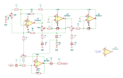

Filter section 02
The parametric band
A state-variable filter wired as a peaking equaliser: one band that can be tuned in frequency, widened or narrowed, and boosted or cut.

How a state-variable band works
A state-variable filter is a summing amplifier followed by two integrators in a loop. It produces low-pass, band-pass and high-pass outputs simultaneously from the same two capacitors, and — the reason it is used for parametric EQ — its centre frequency and its Q can be set independently. Frequency is set by the integrators' resistor-capacitor time constants; Q by how much of the band-pass output is fed back to the summer.
For an equaliser, the band-pass output is added back to or subtracted from the dry signal. Add it and the band peaks; subtract it and the band dips. Everywhere outside the band the band-pass output is near zero, so the signal passes through untouched.
That is a description of the topology the sheet is titled as, not a trace of its connections — with no values on the sheet yet, the wiring has not been checked against a netlist the way the compressor's has.
What the simulation shows
This is exactly the shape a peaking band should have. The response rises to +5.2 dB at about 520 Hz and falls back to within 0.7 dB of flat at both 10 Hz and 20 kHz, so the band touches only the part of the spectrum it is tuned to.
| Frequency | Simulated level |
|---|---|
| 20 Hz | -0.18 dB |
| 100 Hz | +1.34 dB |
| 200 Hz | +3.30 dB |
| 500 Hz | +5.17 dB |
| 1 kHz | +4.24 dB |
| 2 kHz | +2.17 dB |
| 5 kHz | +0.49 dB |
| 20 kHz | +0.03 dB |
The three controls
The simulation file carries three notes placed beside the parts they describe:
| Note in BandA.asc | Placed beside | Control |
|---|---|---|
| “Big = wide” | R5, 90 kΩ | Width, i.e. Q |
| “Big = higher freq” | C2 and R13 | Centre frequency |
| “big = gain” | R18 2 kΩ and R19 8 kΩ | Boost or cut |
R18 and R19 total 10 kΩ and read as a potentiometer modelled as its two halves, set 20% from one end — the usual way to put a pot position into SPICE. The pairing of notes with parts is by position on the drawing, so treat it as a reading rather than a certainty.
The simulated values do not map onto the schematic
The simulation has 22 resistors; the KiCad sheet has 14. Pots split into halves account for some of the difference, but not all of it, and designators do not correspond — the simulation's R5 is not necessarily the sheet's R5. The values proven in LTspice have to be carried across by circuit position, not by reference designator.
The result is also from the 2 September copy in LBPF/, and the schematic in
LBP/ has changed since, including a fifth op amp marked TEMP.